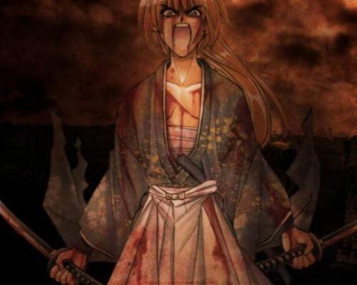
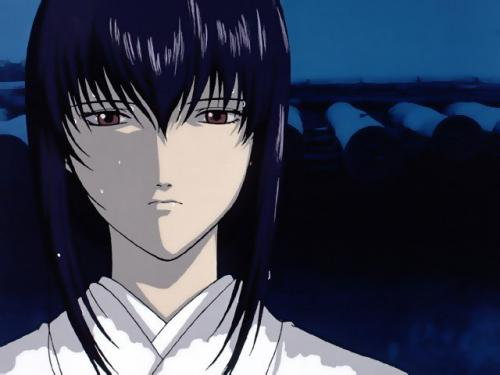

A cicatriz do passado
Himura Kenshin (緋村 剣心?) conhecido como Kenshin Himura no Ocidente,3 é um personagem fictício e o protagonista da manga Rurouni Kenshinnota 1 criada por Nobuhiro Watsuki. Ao criar Kenshin, Watsuki desenhou-o para ser o oposto físico de Hiko Seijūrō, um personagem de uma anterior manga de Watsuki, "Crescent Moon in the Warring States"; um personagem com o mesmo nome aparece em Rurouni Kenshin como o professor de espada de Kenshin.
A história de Kenshin decorre numa versão fictícia do Japão durante a Era Meiji. Kenshin é um lendário ex-assassino conhecido como "Hitokiri Battōsai" (人斬り抜刀斎?)nota 2 (descrito como Battousai the Manslayer na dobragem inglesa da anime da Media Blasters,3 como Battousai: The Slasher na versão inglesa da Sony,7 e como The Unsheather nas capas japonesas kanzenban), mais propriamente chamado Himura Battōsai (緋村抜刀斎?). No fim do Bakumatsu, torna-se um samurai errante (rōnin (浪人?)), empunhando uma sakabatō (逆刃刀? lit. "espada de lâmina revertida"), uma katana que tem o gume na parte interior da curva da espada, e assim quase incapaz de matar. Kenshin viaja pelo Japão oferecendo protecção e ajuda aos que precisam, como expiação pelos assassinatos que cometeu quando era um assassino. Em Tóquio, conhece uma jovem chamada Kamiya Kaoru, que o convida para viver no seu dojo apesar de conhecer o passado de Kenshin. Através da série, Kenshin começa a estabelecer relacionamentos longos com várias pessoas, incluindo ex-inimigos, enquanto têm de lidar com outros tantos inimigos, novos e antigos. Através destes encontros e relacionamentos, Kenshin começa a encontrar a verdadeira expiação pelo seu passado que lhe permitiu conquistar plenamente a sua natureza "Battōsai".
A personagem de Kenshin foi bem recebida pelos fãs, segurando o primeiro lugar em todas as pesquisas de popularidade feitas para a série. Os críticos elogiaram a sua popularidade, apesar de alguns criticarem o seu desenvolvimento durante os vídeos originais de animação (OVA), que diferem da manga. Foi criada uma enorme variedade de coleccionáveis em redor de Kenshin, incluindo figuras, porta-chaves, peluches, e réplicas da sua espada sakabatō.

Tomoe Yukishiro, era uma jovem de uma família de classe média de vendedores. Havia sido prometida para seu amigo de infância que era um jovem de classe média alta. Um mês antes do casamento esse Jovem resolve ir a Kyoto e lá acaba se encontrando com o Battousai, que mata-o!. Ele é o responsável por uma das cicatrizes no rosto de Kenshin. Tomoe entrou em um estado de profunda tristeza e resolveu ir atrás do assassino de seu noivo. Então, a moça conhece Kenshin Himura o Lendário Battousai, que era um jovem de 15 anos na época. Tomoe vê Kenshin matando um ninja e jorra sangue encima dela. A história da uma reviravolta e ela acaba virando uma empregada da hospedaria onde está Kenshin. Tomoe acaba virando esposa de Kenshin (coisas do governo) e os 2 se amavam muito. Kenshin acaba matando Tomoe que entrou na frente de sua espada servindo de escudo contra o oponente de Kenshin. E a morte dela é o motivo de Kenshin ter parado de matar e se tornado um Andarilho (Rurouni).